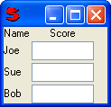

(controls)
GridControl arranges its child controls in a two dimensional grid. It expects a single argument - an object containing a member object for each row, with each row object being a list of controls. GridControl is useful when you want to line things up both vertically in columns and horizontally in rows, at the same time.
For example:
Window(#(Grid (
( (Static Name) (Center (Static Score)) )
( (Static Joe) Number )
( (Static Sue) Number )
( (Static Bob) Number )
)))

Rows do not have to have the same number of controls. Shorter rows will simply have empty cells on the right hand side.
Note: If a control has xstretch, it will be sized to fill its cell. GridControl ignores the ystretch of its child controls. You can specify xstretch or ystretch on the Grid itself if desired.
A control can span multiple columns by setting a span parameter on the control to the number of columns to span. For example:
Window(#(Grid (
( (Static One) (Static Two) (Static Three) (Static Four) )
( (Field width: 25, span: 2) (Static Three) )
( (Pair (Static One) Number) (Static Two) (Static Three) (Static Four) )
)))
Note: A spanned control must fit within the columns it is spanning. If it is larger, it will overlap.